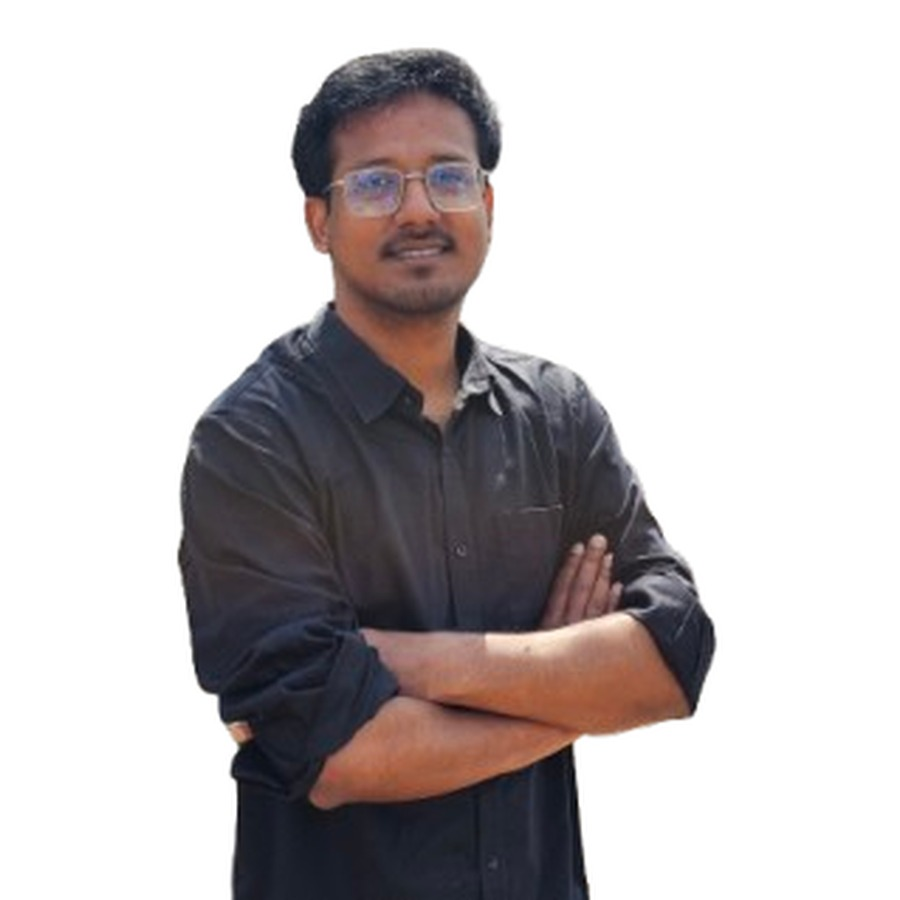

M.S., Chemical and Biological Engineering
Gachon University, South Korea — ECMS Lab

Graduate Research Student, M.S. in Chemical and Biological Engineering
Energy Conversion Materials and Systems (ECMS) Lab
Department of Chemical, Biological and Battery Engineering, Gachon University, Republic of Korea
I build soft machines — actuators that move without motors, and the stretchable circuits that drive them.
I am a graduate research student in the Energy Conversion Materials and Systems (ECMS) Lab at Gachon University, where I work on soft robotic systems: low-voltage artificial muscle actuators, flexible and stretchable circuitry, and the integration of the two into bio-inspired robots that can operate untethered.
My route into soft robotics came through electronics. I hold a B.Sc. in Electronics and Communication Engineering from Khulna University, Bangladesh, where my work spanned analog and mixed-signal circuit design — including a 6-bit threshold inverter quantization flash ADC in 0.25 µm CMOS — and brain–computer interfacing for assistive robotics. I then spent nearly two years as a machine learning engineer in industry, building computer vision and OCR systems deployed at production scale, before joining Gachon University in September 2025.
That combination is what I bring to soft robotics. Designing an artificial muscle is a materials problem, but making it useful is a circuits and control problem — low-power driving electronics, sensing, and increasingly data-driven design of the materials themselves. I am interested in the whole path from material to moving machine.
Low-voltage, low-power actuators — ionic and hydrogel systems with nanomembrane electrodes — that produce large strain from small electrical input.
Deformable interconnects and driving electronics that survive the strains a soft body undergoes, enabling untethered operation.
Terrestrial and aquatic soft robots built around artificial muscle, with a focus on miniaturization toward microrobotic platforms.
Applying deep learning to material design, device characterization, and closed-loop control of soft systems.
Gachon University, South Korea — ECMS Lab
Khulna University, Bangladesh — CGPA 3.17